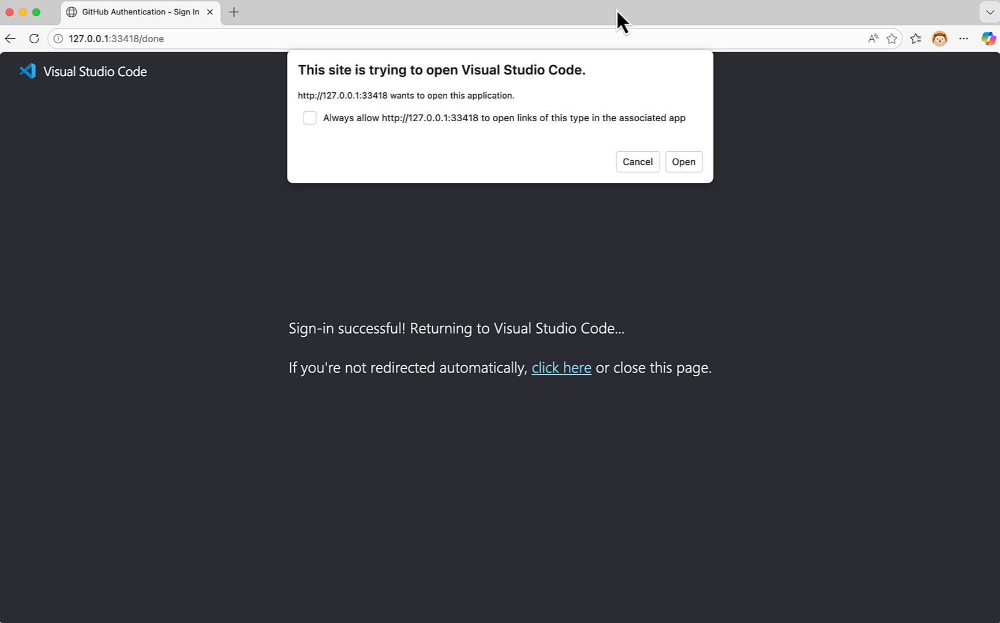
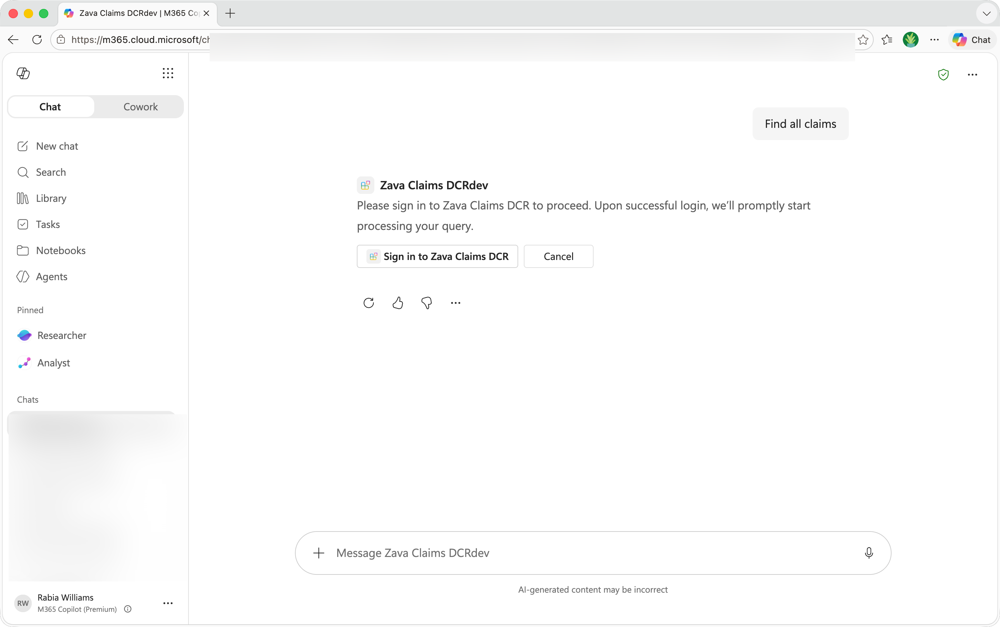
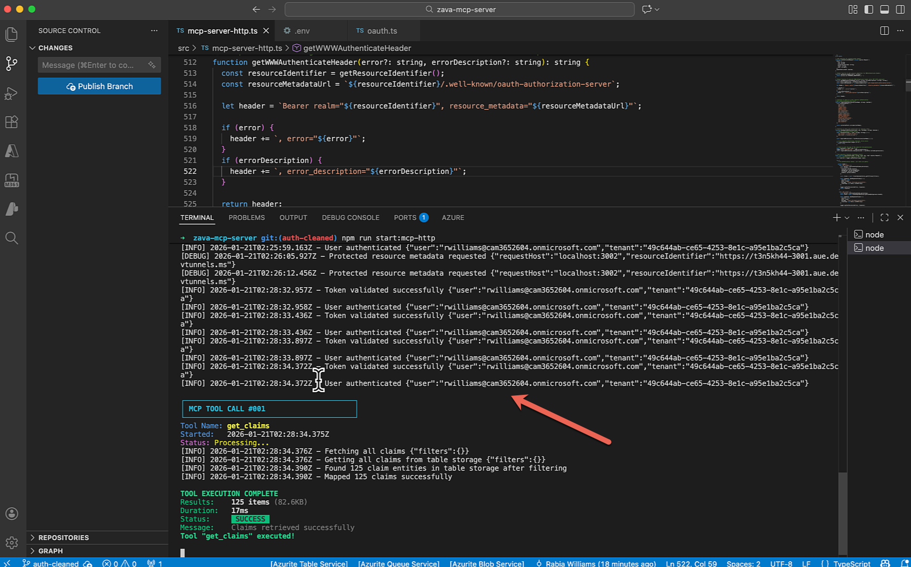

ラボ 10: Declarative エージェントを OAuth 保護された MCP サーバーに接続
このラボでは、OAuth 2.0 で保護された Model Context Protocol (MCP) サーバーを Zava Insurance の保険金請求システム向けに実行し、Microsoft 365 Copilot の Declarative エージェントと統合します。ラボ 08 では匿名 MCP サーバーを扱いましたが、このラボでは Microsoft Entra ID 認証 を追加し、保険金データへのエンタープライズレベルのセキュアなアクセスを実現します。
Microsoft 365 が AI モデルとオーケストレーションを提供する宣言型エージェントを構築したい場合は、次のラボを実施してください。
- 🏁 ようこそ
- 🔧 セットアップ
- 🧰 宣言型エージェントの基礎
- 🛠️ API のゼロからの構築と統合
- 🔌 統合
シナリオ
MCP サーバーを構築したラボ 08 を踏まえ、Zava Insurance は本番運用に向けて保険金請求システムを保護する必要があります。匿名 MCP サーバーは開発およびテストには最適でしたが、本番環境へ移行する前にセキュリティ チームは OAuth 2.0 認証を必須としています。開発チームは、Microsoft Entra ID 認証を統合し、認可されたユーザーのみが機密性の高い保険金データへアクセスできるようにする必要があります。この認証付き MCP サーバーは JWT トークンを検証し、スコープ ベースのアクセス許可を実装し、保護リソース メタデータ検出の RFC 9728 に準拠して Microsoft 365 Copilot の Declarative エージェントとのセキュアな統合を可能にします。
🎯 ラボの目的
このラボを完了すると、次のことができるようになります。
- OAuth 2.0 認証用の Microsoft Entra ID アプリ登録を設定する
- セキュアな MCP サーバー運用のために環境変数を構成する
- Zava の OAuth で保護された MCP サーバーを構築して実行する
- Microsoft Entra ID を用いた JWT トークン検証の仕組みを理解する
- 保護された MCP サーバーに対して認証を行う Declarative エージェントを作成する
- 認証付きの自然言語クエリでエージェントをテストする
📚 前提条件
次の準備を行ってください。
- お使いのマシンに Node.js 22+ がインストールされている
- VS Code と Microsoft 365 Agents Toolkit 拡張機能 v 6.4.2 以上がインストールされている
- Copilot ライセンスを持つ Microsoft 365 開発者アカウント
- Microsoft Entra ID へのアクセス権を持つ Azure サブスクリプション（アプリ登録用）
- TypeScript / JavaScript、REST API、JSON、OAuth 2.0 の基礎知識
- VS Code Dev Tunnels 用の GitHub アカウント
- ラボ 08 の完了（推奨だが必須ではありません）
Exercise 1: 開発環境のセットアップ
この演習では、Zava の認証付き MCP サーバーのコードベースをクローンし、ローカル開発環境をセットアップします。
Step 1: リポジトリをクローンする
ターミナルを開き、次のコマンドを実行します。
git clone https://github.com/microsoft/copilot-camp.git
cd copilot-camp/src/extend-m365-copilot/path-e-lab10-mcp-auth/zava-mcp-serve
Step 2: 依存関係をインストールする
必要なパッケージをインストールします。
npm install
主要な依存関係がインストールされます。
Step 3: プロジェクト構成を確認する
VS Code でプロジェクトを開きます。
code .
主なディレクトリ:
src/- TypeScript ソース コードsrc/auth/- OAuth 認証モジュール（本ラボで追加）data/- サンプル JSON データ ファイル
src/auth/oauth.ts にはトークン検証と保護リソース メタデータのための OAuth 2.0 実装が含まれています。
これでサンプル データと認証機能を備えたコードベースの準備が整いました。
Exercise 2: Microsoft Entra ID アプリ登録の作成
認証付き MCP サーバーを実行する前に、OAuth 2.0 認証を処理する Microsoft Entra ID でアプリケーションを登録します。
Step 1: アプリ登録を作成する
- Azure Portal → Microsoft Entra ID → App registrations に移動
- New registration をクリック
- 次のように構成
- Name:
Zava Claims MCP Server - Supported account types:
Accounts in any organizational directory (Any Microsoft Entra ID tenant - Multitenant) and personal Microsoft accounts (e.g. Skype, Xbox) - Redirect URI: いったん空欄のまま（次の手順で設定します）
- Register をクリック
- Application (client) ID をコピー - 後で使用します
Step 2: プラットフォームのリダイレクト URI を構成する
登録後、プラットフォームごとにリダイレクト URI を構成します。リダイレクト URI は OAuth 2.0 認証において極めて重要で、Microsoft Entra ID が認証後にユーザー（および認証トークン）を送信する先を指定します。各リダイレクト URI は、トークンを受信するアプリケーションの URL と完全に一致する必要があります。
-
左ナビゲーションで Authentication を選択
-
最初の Web リダイレクト URI を追加
- Add a platform（新しいプレビュー UI では Add redirect URI）をクリック
- Web を選択
- リダイレクト URI として
https://teams.microsoft.com/api/platform/v1.0/oAuthRedirectを追加 -
Configure をクリック
-
追加のリダイレクト URI を追加
- 初期設定後に Add URI（プレビュー UI では Edit）をクリック
https://vscode.dev/redirectを追加-
Save をクリック
-
Manifest で localhost リダイレクト URI を追加
重要: 非 HTTPS URI は手動設定が必要です
Azure Portal UI では HTTPS または
localhostを使用する URI しか追加できません。MCP Inspector はhttp://127.0.0.1:33418を使用するため、この URI をアプリ マニフェストで手動追加する必要があります。 -
左ナビゲーションで Manifest を選択
"web"セクション内の"redirectUriSettings"（またはマニフェストのバージョンによっては"redirectUris"）を探す- リダイレクト URI 配列に
http://127.0.0.1:33418を追加します。セクションは次のようになります。
json "web": { "redirectUris": [ "https://teams.microsoft.com/api/platform/v1.0/oAuthRedirect", "https://vscode.dev/redirect", "http://127.0.0.1:33418" ], ... } -
ページ上部の Save をクリック
-
構成を確認する
- Authentication に戻る
- Platform configurations → Web で 3 つのリダイレクト URI が登録されていることを確認
https://teams.microsoft.com/api/platform/v1.0/oAuthRedirecthttps://vscode.dev/redirecthttp://127.0.0.1:33418
- Implicit grant and hybrid flows の両オプションが 未選択（無効）であることを確認
Step 3: クライアント シークレットを作成する
- Certificates & secrets → Client secrets に移動
- New client secret をクリック
- 説明（例:
zava-mcp-secret）を入力し、有効期限（推奨: 24 か月）を選択 - Add をクリック
- シークレット値をすぐにコピー - 再表示されません！
Step 4: API を公開する
- Expose an API に移動
- Application ID URI 横の Add をクリックし、デフォルト形式
api://your-client-idを採用 - Add a scope をクリックし、次を構成
- Scope name:
access_as_user - Who can consent: Admins and users
- Admin consent display name:
Access Zava Claims System - Admin consent description:
Allows the app to access Zava Claims data on behalf of the signed-in user - User consent display name:
Access Zava Claims System - User consent description:
Allows this app to access your Zava Claims data on your behalf - State: Enabled
- Add scope をクリック
これで Microsoft Entra ID のアプリ登録が完了しました！
Exercise 3: 環境構成とローカル データベースの起動
この演習では、OAuth 用の環境変数を設定し、ローカル データベースを起動します。
Step 1: Dev Tunnel で公開アクセスを設定する
MCP サーバー用に公開 HTTPS URL が必要です。
- VS Code のターミナル パネルで Ports タブを選択
-
Forward a Port をクリックし、ポート
3001を入力GitHub 認証が必要となる場合があります
VS Code で Dev Tunnels を初めて使用する場合は、GitHub アカウントでのサインインを求められることがあります。認証を完了してください。
-
転送されたポートのアドレスを右クリックし、Port Visibility → Public を選択
- トンネル URL（例:
https://abc123def456.use.devtunnels.ms）をコピー
この URL を保存 してください。次の環境設定で使用します。
Step 2: 環境変数を設定する
zava-mcp-server ディレクトリの ルート（package.json と同じ階層、src フォルダーの外）に新しく .env ファイルを作成します。
重要: ファイルの配置場所に注意
.env ファイルはプロジェクトのルート ディレクトリに配置する必要があります。src フォルダー内などに配置すると、環境変数が正しく読み込まれません。
# OAuth Configuration (Required for authentication)
OAUTH_CLIENT_ID=<your-application-client-id>
OAUTH_CLIENT_SECRET=<your-client-secret-value>
OAUTH_AUTHORITY=https://login.microsoftonline.com/common
OAUTH_REDIRECT_URI=http://localhost:6274/oauth/callback/debug
OAUTH_SCOPES=api://<your-application-client-id>/access_as_user
# Resource Identifier (for MCP Inspector and RFC 9728 metadata)
RESOURCE_IDENTIFIER=<your-tunnel-url>
# CORS Configuration
ADDITIONAL_ALLOWED_ORIGINS=<your-tunnel-url>,http://localhost:6274
SERVER_BASE_URL=<your-tunnel-url>
# Server Configuration
PORT=3001
HOST=127.0.0.1
NODE_ENV=development
# Storage Configuration
AZURE_STORAGE_CONNECTION_STRING="DefaultEndpointsProtocol=http;AccountName=devstoreaccount1;AccountKey=Eby8vdM02xNOcqFlqUwJPLlmEtlCDXJ1OUzFT50uSRZ6IFsuFq2UVErCz4I6tq/K1SZFPTOtr/KBHBeksoGMGw==;TableEndpoint=http://127.0.0.1:10002/devstoreaccount1;"
プレースホルダーを置き換えてください：
<your-application-client-id>- Entra ID アプリ登録の Application (client) ID<your-client-secret-value>- コピーしたクライアント シークレット値<your-tunnel-url>- Step 1 の Dev トンネル URL（例:https://abc123def456.use.devtunnels.ms）
Step 3: Azure Storage エミュレーターを起動する
Terminal 1 で Azurite エミュレーターを起動します。
npm run start:azurite
出力例:
Azurite Blob service is starting at http://127.0.0.1:10000
Azurite Queue service is starting at http://127.0.0.1:10001
Azurite Table service is starting at http://127.0.0.1:10002
このターミナルは開いたまま にしておいてください。ローカル データベース サーバーです。
Step 4: サンプル保険金データをロードする
Terminal 2 で Zava のサンプル データを初期化します。
npm run init-data
これにより、以下のような実際的なデータが読み込まれます。
- Claims - 風害、水害、火災被害の案件
- Contractors - 屋根工事業者、水害復旧業者、総合請負業者
- Inspections - 予定済みおよび完了した調査タスク
- Inspectors - 専門分野を持つ現地調査員
すべてのテーブルが初期化されたことを示すメッセージが表示されます。
Exercise 4: OAuth で保護された MCP サーバーを起動する
次に、OAuth トークンを検証してからアクセスを許可する Zava の認証付き MCP サーバーを起動します。
Step 1: MCP サーバーをビルドして起動する
Terminal 2 で（Terminal 1 で Azurite を実行したまま）以下を実行します。
npm run build
npm run start:mcp-http
OAuth が有効になっていることを示すメッセージが表示されます。
🚀 Zava Claims MCP HTTP Server started on 127.0.0.1:3001
Security: OAuth 2.0 authentication enabled
...
🔍 Protected Resource Metadata Endpoints (RFC 9728):
GET /.well-known/oauth-authorization-server - Standard OAuth metadata
...
Step 2: OAuth が有効か確認する
ブラウザーで次の URL を開きます。
http://127.0.0.1:3001/health
OAuth が有効であることを示す JSON 応答が表示されます。
{
"status": "healthy",
"timestamp": "2025-01-21T10:00:00.000Z",
"service": "zava-claims-mcp-server",
"authentication": "OAuth enabled"
}
"authentication": "OAuth enabled" が表示されていれば、サーバーが認証モードで稼働していることを示します。
Step 3: OAuth ディスカバリー エンドポイントをテストする
OAuth ディスカバリー エンドポイントを開きます。
http://127.0.0.1:3001/.well-known/oauth-authorization-server
以下の OAuth メタデータが表示されます。
issuer- サーバーのベース URLauthorization_endpoint- Microsoft ログイン URLtoken_endpoint- トークン交換 URLscopes_supported- 利用可能な OAuth スコープ
この RFC 9728 準拠のエンドポイントにより、MCP クライアントが認証要件を検出できます。
Step 4: 認証必須を確認する
認証なしで MCP ツールにアクセスしてみます。
curl -X POST "http://127.0.0.1:3001/mcp/tools/call" \
-H "Content-Type: application/json" \
-d '{"name":"get_claims","arguments":{}}'
WWW-Authenticate ヘッダーと共に 401 Unauthorized 応答が返されます。
{
"error": "Missing Authorization header",
"description": "Please include Bearer token in Authorization header",
"auth_url": "https://your-tunnel-url/oauth/authorize",
"resource_metadata_url": "https://your-tunnel-url/.well-known/oauth-authorization-server"
}
認証が正しく機能していることを確認できました。
Exercise 5: 新しい Declarative エージェント プロジェクトを作成する
この演習では、Microsoft 365 Agents Toolkit を使用して、Zava の認証付き保険金システムへ接続する Declarative エージェント プロジェクトを作成します。
Step 1: Microsoft 365 Agents Toolkit で新しいエージェントを作成する
- VS Code で新しいウィンドウを開く
- 左サイドバーの Microsoft 365 Agents Toolkit アイコンをクリック
- サインインを求められたら Microsoft 365 開発者アカウントでサインイン
- Agents Toolkit パネルで Create a New Agent/App をクリック
- テンプレートから Declarative Agent を選択
- Add an Action を選択
- Start with an MCP server (preview) を選択
- 演習 3 で取得した公開 MCP Server URL（トンネル URL +
/mcp/messages）を入力 - エージェントをスキャフォルドするフォルダーを指定（デフォルトまたは任意）
- プロジェクト詳細の入力を求められたら次を入力
- Application Name:
Zava Claims Assistant (Auth)
- Application Name:
Step 2: MCP サーバー認証を構成する
新しく作成されたプロジェクトが開き、.vscode/mcp.json ファイルが表示されます。これは MCP サーバー設定ファイルです。
- Start ボタンを選択してサーバーからツールを取得
- MCP サーバーが認証を要求し、Dynamic Client Registration をサポートしていない旨のダイアログが表示されます。手動で登録する必要があります
- すでに Entra ID に
https://vscode.dev/redirectとhttp://127.0.0.1:33418をリダイレクト URI として構成済みなので Copy URIs & Proceed を選択 - Agents Toolkit のウィザードで OAuth 資格情報の入力を求められます。アプリ登録の client ID と secret を入力
- MCP サーバーへの認証を求められます
- ブラウザーが Microsoft Entra ID の認可エンドポイント (
https://login.microsoftonline.com/...) を開きます。Microsoft 365 アカウントでサインイン後、http://127.0.0.1:33418にリダイレクトされ、サインイン成功画面が表示されます。ブラウザーを閉じ、プロジェクトに戻ります

Step 3: ツールを追加しエージェントをプロビジョニングする
- サーバーが起動しており、利用可能なツール数とプロンプトが表示されます
-
ATK: Fetch action from MCP を選択してエージェントに追加するツールを選びます
ATK: Fetch action from MCP が表示されない場合
ATK: Fetch action from MCP が表示されない場合は、VS Code を再起動してプロジェクトを再度開いてください。
-
プラグイン マニフェスト ファイル（通常
appPackage/ai-plugin.json）を選択 - テスト用に
get_claimsツールを選択 - Teams Developer Portal でエージェントを構成するよう求められたら手順に従います
- Authentication Type として OAuth (with static registration) を選択。ツールキットがプラグイン マニフェストを作成します
- Provision を選択し、テナントにエージェントをプロビジョニング
- ウィザードが再度 client ID と secret を求めます。先ほどと同じ値を入力（Developer Portal での OAuth 登録用）
- スコープを追加:
api://<your-client-id>/access_as_user - Confirm を選択してプロビジョニングを開始
プロビジョニングが完了すると、Developer Portal 用トークンが自動的に生成され、.env.dev ファイルに MCP_DA_AUTH_ID_XXXX のような変数として追加されます。
Developer Portal での OAuth 登録
Developer Portal での OAuth 登録の構成 の詳細をご覧ください。今回、Agents Toolkit が自動でエージェント用に構成を行いました。
これで OAuth で保護された MCP サーバーに接続された Declarative エージェントが完成しました。
Exercise 6: 認証付きエージェント統合のテスト
Declarative エージェントが OAuth で保護された MCP サーバーと正常に通信できるかテストします。
Step 1: MCP サーバーが稼働中であることを確認する
テスト前に、前の演習で起動した MCP サーバーが動作中か確認します。
- zava-mcp-server プロジェクトを実行しているウィンドウを開く
- Azurite が稼働中か確認:
npm run start:azurite - MCP サーバーが稼働中か確認:
npm run start:mcp-http - Dev Tunnel のポート転送が有効か確認
Step 2: Microsoft 365 Copilot でテストする
- https://m365.cloud.microsoft/chat/ で Copilot を開く
- 左サイドバーの Agents から Zava Claims Assistant (Auth) を選択
- 「 Find all claims 」のようなプロンプトを入力
- Copilot がプラグインへのデータ送信確認を求めたら Confirm または Allow を選択
- エージェントがデータ取得前にサインインを促します。Sign in を選択

- サインイン後、エージェントが保険金情報を返します
- MCP サーバー側のターミナルで、認証成功とツール呼び出しが確認できます

🎉 お疲れさまでした！
Zava Insurance の OAuth で保護された Declarative エージェントを作成し、認証付き MCP サーバーと安全に統合することに成功しました。
実施した内容
- ✅ OAuth 2.0 用の Microsoft Entra ID アプリ登録を作成
- ✅ セキュアな認証のために環境変数を構成
- ✅ JWT トークン検証を備えた OAuth 保護 MCP サーバーを実行
- ✅ RFC 9728 準拠の OAuth ディスカバリー エンドポイントをテスト
- ✅ 認証付き MCP 統合を備えた Declarative エージェントを作成
- ✅ 保険金データに対するセキュアな自然言語クエリをテスト
ラボ 08 からの主な違い
| 項目 | ラボ 08 (匿名) | ラボ 10 (認証付き) |
|---|---|---|
| 認証 | なし - すべてのエンドポイントが公開 | Microsoft Entra ID による OAuth 2.0 |
| トークン検証 | なし | JWKS に基づく JWT 検証 |
| セキュリティ ヘッダー | なし | メタデータ URL を含む WWW-Authenticate |
| ディスカバリー | なし | RFC 9728 保護リソース メタデータ |
| エンタープライズ対応 | 開発用途のみ | 本番環境向けセキュリティ |
🔗 追加リソース
-
Build declarative agents for Microsoft 365 Copilot with MCP: https://devblogs.microsoft.com/microsoft365dev/build-declarative-agents-for-microsoft-365-copilot-with-mcp/
-
MCP Protocol Documentation: https://modelcontextprotocol.io/
- Microsoft Entra ID Documentation: https://docs.microsoft.com/en-us/azure/active-directory/
- RFC 9728 - OAuth 2.0 Protected Resource Metadata: https://datatracker.ietf.org/doc/html/rfc9728
- Azure Table Storage: Azure Documentation